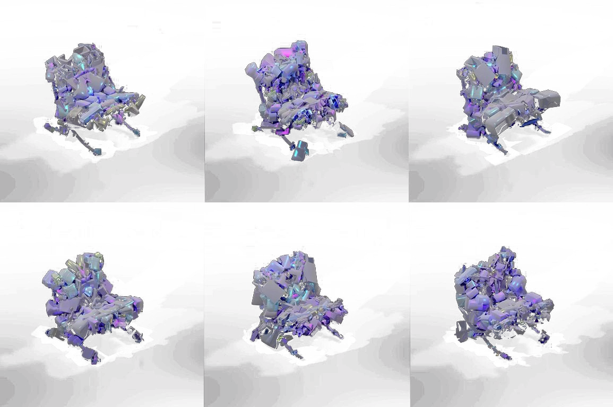

<div class="text_center_fullscreen">
  <div class="home_inner">

    <br>
    <div style="font-size:1.5em;">kit-bashing</div>
    <br>

   Bangkok • Year 1 Semester 2 • Brief: Mash-up • Deniz Guvendi • 2025-2026 International Program in Design and Architecture, Chulalongkorn University.

    <br><br>


<div class="image_center_fullscreen"><span>iterations</span></div>
<br><br>

<div style="font-size:1.2em; font-weight:bold;">Synopsis</div>
<p>The BA year1 design studio exercise introduces procedural 3D modeling in Houdini. kitbash randomly sourced digital objects onto a key object, like Mies van der Rohe’s Barcelona Chair in this example. drawing on Object-Oriented Ontology, students explore the fluidity/interchangability of design language while stripping everyday digital items of their original meaning to form complex, novel, "new" forms.
<br><br>

<!-- <div class="image_center_fullscreen"><span>2.jpeg</span></div>
<br><br>


<div class="columns_3">
  <div class="image_center_fullscreen"><span>3.jpeg</span></div>
  <div class="image_center_fullscreen"><span>4.jpeg</span></div>
  <div class="image_center_fullscreen"><span>5.jpeg</span></div>
</div>

<br><br> -->

  </div>
</div>